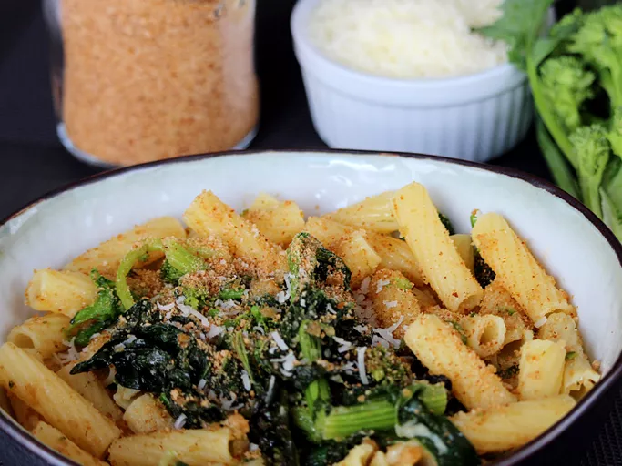

Pasta with Broccoli Rabe (Cima di Rapa) 
Photo by Buckwheat Queen
Description:
This is a very popular winter dish in Italy. Broccoli rabe is sauteed then tossed with anchovies, garlic, bread crumbs and grated Pecorino Siciliano cheese. This version was given to me by a Sicilian friend. Enjoy with a nice hearty red wine and you'll be ready for any winter weather! Garnish with a little more bread crumbs and grated cheese. Be aware this is just a copy for learning. The original recipe can found here
- 1 teaspoon salt
- 1 (12 ounce) box gluten-free tortiglioni pasta
- 2 tablespoons extra-virgin olive oil, divided
- 3 anchovies
- 1 clove garlic, crushed
- 2 pounds broccoli rabe, stemmed and cut into large pieces
- 1 ½ cups toasted plain gluten-free bread crumbs, divided
- 1 cup grated Pecorino Siciliano cheese, divided
- 1 tablespoon red pepper flakes
Step by Step Directions
- Step: Bring a large pot of lightly salted water to a boil. Cook tortiglioni in the boiling water, stirring occasionally until tender yet firm to the bite, 10 to 12 minutes.
- Step: Meanwhile, heat 1 tablespoon oil in a large saute pan over medium-high heat. Add anchovies and garlic. Saute until slightly brown, 3 to 4 minutes, but do not overcook garlic, as this will make the dish bitter. Add broccoli rabe and stir to coat. Alternately add 1/2 of the bread crumbs and 1/2 of the Pecorino Siciliano cheese, stirring constantly, adding 1/2 tablespoon oil while mixing.
- Step: Drain pasta and fold into the mixture, taking care not to break the pasta. Fold in remaining cheese and bread crumbs gently. Top with remaining oil. Transfer to serving plates and sprinkle with red pepper.